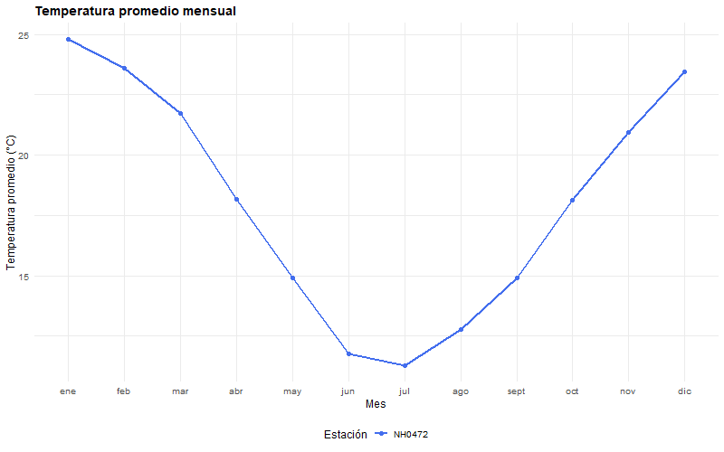

estacionR es un paquete en desarrollo orientado al análisis de datos meteorológicos provenientes de estaciones del sistema SIGA–INTA (Argentina).
Su propósito es explorar el proceso de creación y desarrollo colaborativo de paquetes en R y está diseñado con fines académicos y de aprendizaje.
Instalación
Podés instalar la versión de prueba de estacionR desde GitHub con:
# install.packages("pak")
pak::pak("ifylopez/estacionr")Datasets incluidos:
El paquete incluye varios datasets listos para usar:
| Nombre | Descripción |
|---|---|
| NH0046 | Registros meteorológicos diarios de la estación NH0046 |
| NH0098 | Registros meteorológicos diarios de la estación NH0098 |
| NH0437 | Registros meteorológicos diarios de la estación NH0437 |
| NH0472 | Registros meteorológicos diarios de la estación NH0472 |
| NH0910 | Registros meteorológicos diarios de la estación NH0910 |
| metadatos_completos | Tabla con información descriptiva de las estaciones |
Ejemplo de uso rápido:
Funciones incluidas:
leer_datos_estacion: Recibe el ID de la estación a leer y la ruta donde se desea guardar el archivo. Luego, descarga (si es necesario) y lee el archivo CSV de la estación meteorológica y devuelve un objeto de la clase data.frame con los registros correspondientes.
tabla_resumen_temperatura: Recibe uno o mas data frames con registros meteorológicos (de las estaciones disponibles en el dataset del paquete). Luego, calcula la media, mínimo, máximo, desviación y número de observaciones de la variable temperatura_abrigo_150cm y devuelve un objeto de la clase data.frame con los datos calculados previamente.
grafico_temperatura_mensual: Recibe un data frame con los registros meteorológicos de una o mas estaciones, colores para generar el gráfico y el titulo de este. Luego, calcula el promedio mensual de temperatura_abrigo_150cm y devuelve un gráfico que muestra la temperatura promedio mensual.
Uso de funciones:
A continuación mostramos un ejemplo mínimo y completo del flujo de trabajo principal:
# 1. Leer datos (ejemplo local)
df <- leer_datos_estacion("NH0472", "datos/NH0472.csv")
# 2. Generar tabla resumen
resumen <- tabla_resumen_temperatura(df)
# 3. Graficar promedio mensual
grafico_temperatura_mensual(df, titulo = "Temperatura promedio mensual")
Cómo contribuir al paquete:
Hacé un fork y cloná el proyecto: Creá un fork de este repositorio en tu cuenta de GitHub y descargá una copia local en tu computadora para trabajar en tus modificaciones.
Realizá tus cambios y enviá un pull request: Implementá las mejoras o correcciones que consideres necesarias en tu versión del proyecto. Luego, abrí un pull request hacia la rama principal del repositorio original, explicando claramente el objetivo y el alcance de tu contribución.